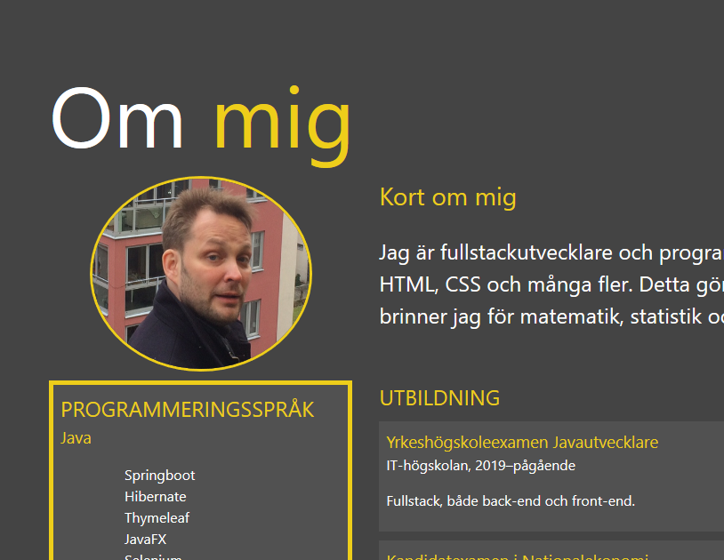
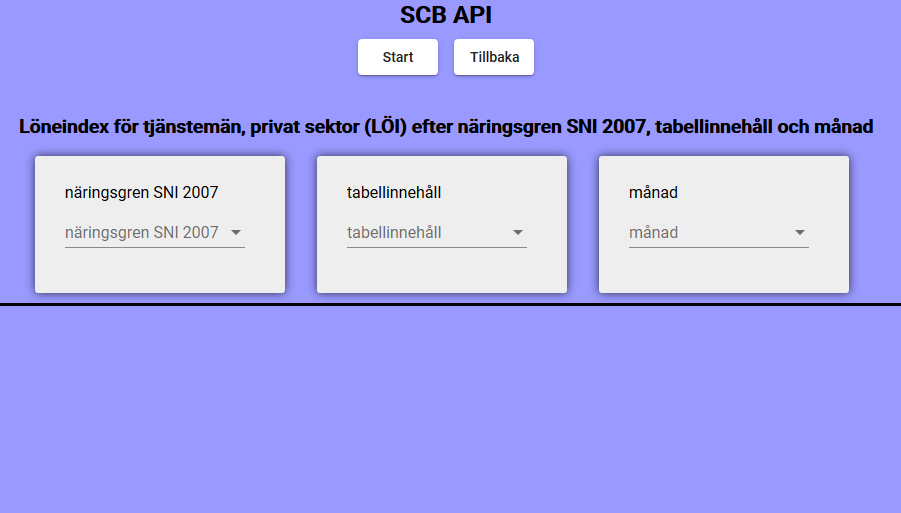

Mina projekt
Några av mina projekt!

Projects
Github
Webbportfolion är helt klientbaserad och byggd med Node.js,
Sass, html och JavaScript. Projektet består av fyra sidor en Välkomstsida,
CV, portfolio och en rest API för att skicka E-post.
 Projects
Github
Projects
Github
Minröj är är en kopia av det klassiska spelet minröj som fanns
på windows förut. Spelet är skapat i Python och innehåller
rekursiva funktioner, Classer, ett tidtagarur och en topplista
som sparas lokalt på datorn. Det grafiska interfacet är gjort med biblioteket Tkinter.

Projects
Github
”Work in progress”
Webbsidan är en grafisk rest API som presenterar offentlig statistik.
Den är skapad i Angular. Grafer kommer att skapas i D3.
Just nu är den uppkopplad mot Statistiska Centralbyråns
API och har ett hundratal kategorier. Senare kommer den kopplas upp mot Riksbanken,
KOLADA och många fler.